Hicran Ablam İçin 💗
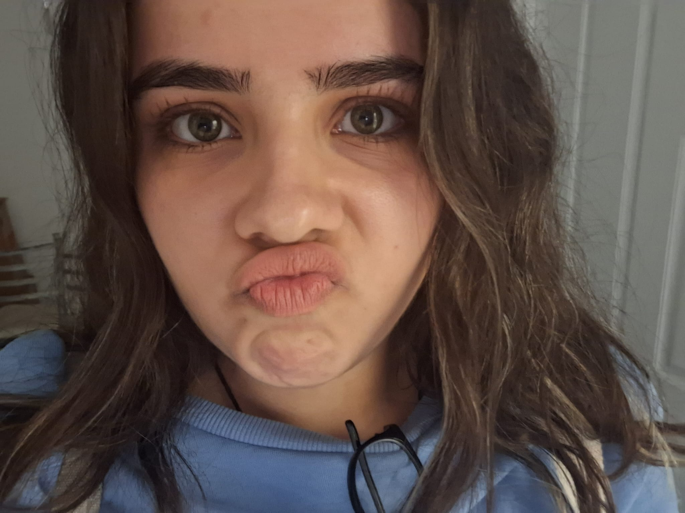Bu güzellik için
Geçen seneyi hatırlıyor musun?
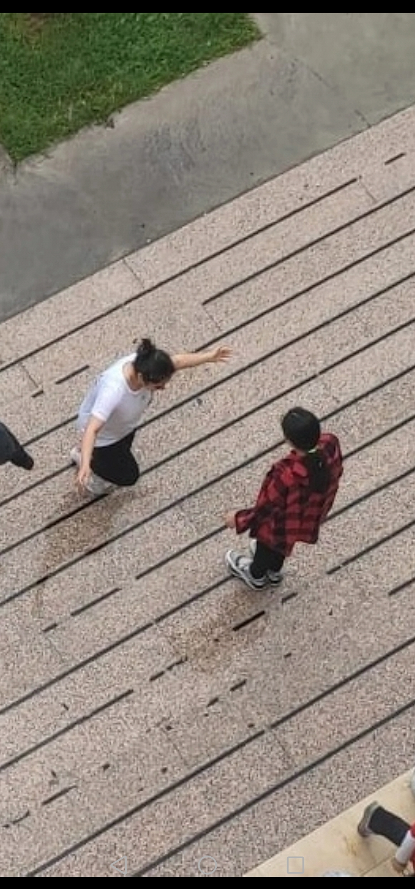Bu fotonun çekildiği zaman...
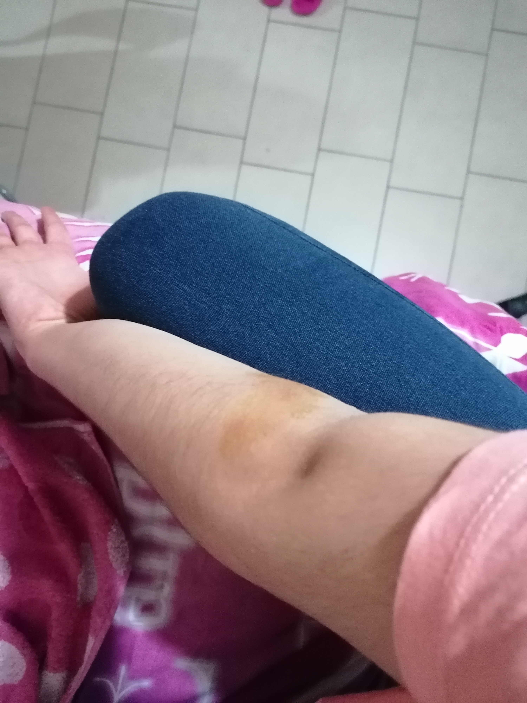Ben patenden düştüğüm zaman koluma tendirdiyot sürmüştün...
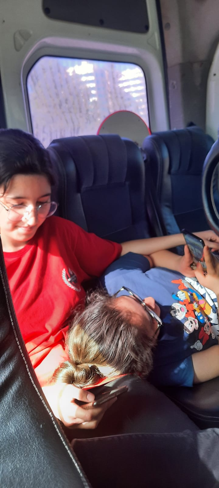 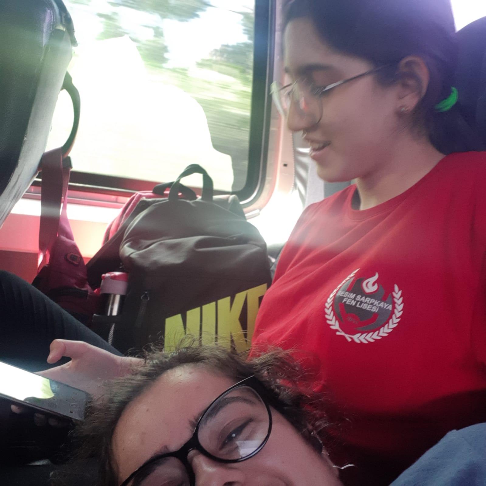 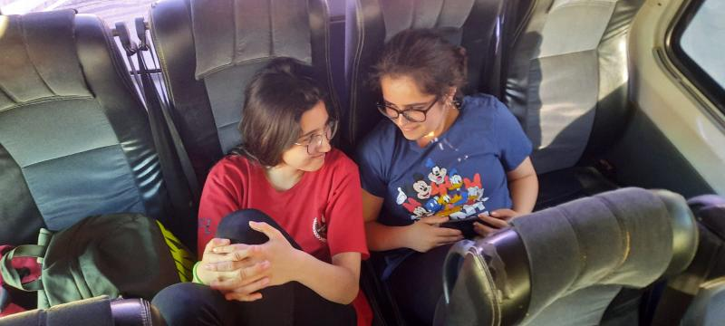Bu servis yolculuğu >>>>
Sonra sen Giresun'a gittin...

Sen gitmeden önce:

Sonra ben biraz böyle oldum.
Kafamı koyacak omuz bulamadım...
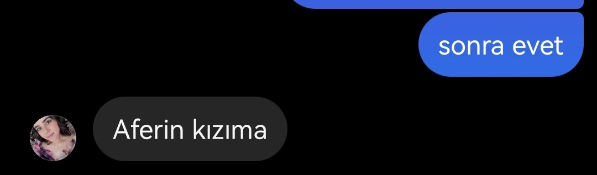 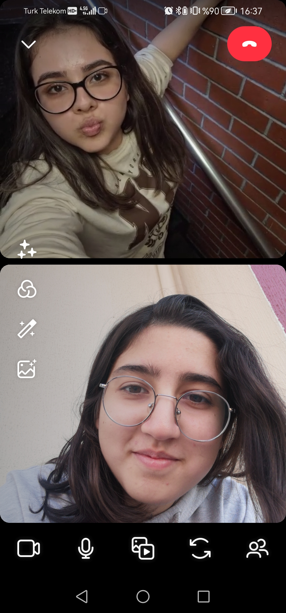
Ama sen 871 km öteden bile yanımdaymışsın gibi hissettirdin bana hep.
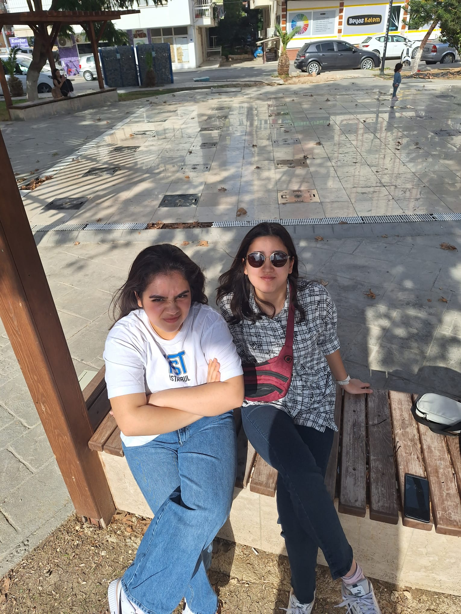Ama sonra geldin
Biliyor musun geldiğin hafta gidene kadar içimde hep bi yarım tamamlanmış gibi hissettim, evde bile.
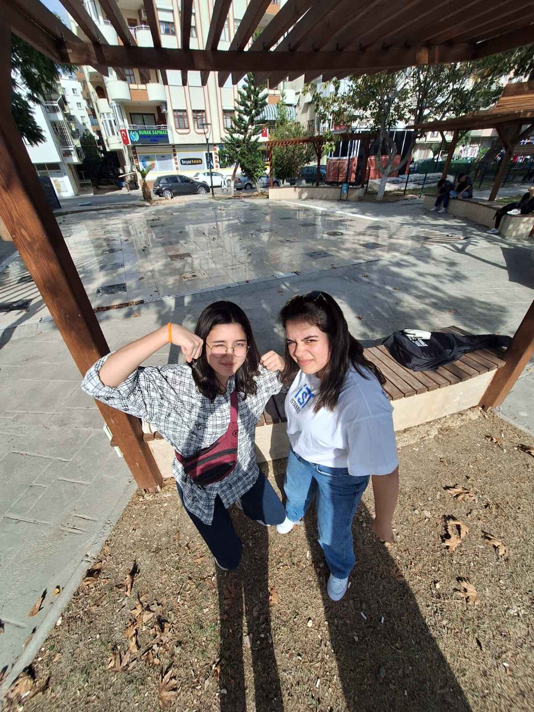 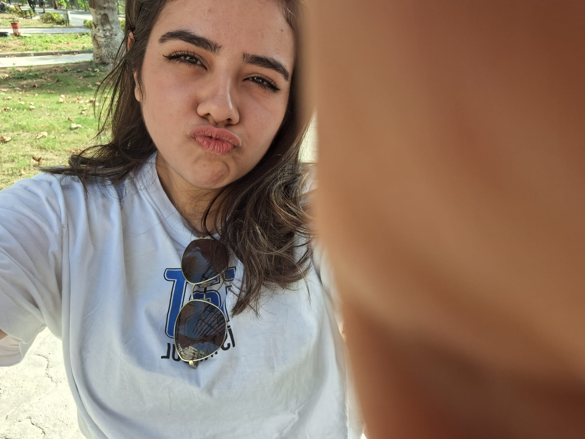Buluşma günümüz mükemmeldi...
Seni yine çok özlüyorum. Ama bugün itibari ile 32 gün kaldı. İyiki varsın Hicran Abla'm. Hayatımda asla
ilçe dışında okumaya gelip 9. sınıfken 12. sınıflardan bir 'abla' ile en yakın arkadaş olacağım aklıma
gelmezdi. SENİ ÇOK SEVİYORUM.